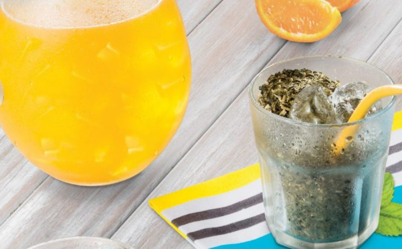
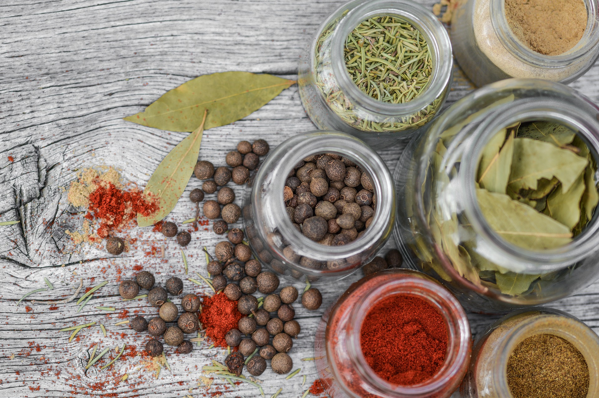

Infusión Nacional
La yerba mate, cuyo nombre científico es Ilex Paraguariensis es un árbol nativo de la Selva Paranaense,
que en estado silvestre puede alcanzar una altura de entre 12 y 16 metros. Para facilitar su cosecha,
las plantas son podadas hasta dos veces al año a una altura promedio de 2 metros. En la Argentina,
llamamos mate a la infusión que se prepara con sus hojas, como también al recipiente donde se la toma,
siendo el más utilizado el de calabaza.
Parte de nuestra Historia.
Su origen se remonta a los pueblos guaraníes, que utilizaban las hojas del árbol como bebida, objeto de
culto y moneda de cambio. Durante las largas travesías por la selva, los conquistadores españoles
notaron que los guaraníes tenían mayor resistencia luego de tomar esta bebida sagrada.
Más tarde los jesuitas introdujeron el cultivo en las reducciones y contribuyeron a su difusión y
comercialización, al punto tal de que la infusión se hizo conocida entonces como té de los jesuitas.
Producción.
El cultivo se localiza en Misiones y nordeste de Corrientes. En 2019 la producción de yerba mate molida
y envasada para el mercado interno fue de casi 277.332.014 millones de kg. Nuestro país es hoy el
principal productor y exportador mundial de yerba mate.
Consumo.
Según datos del Instituto Nacional de la Yerba Mate (INYM), en la Argentina se consume un promedio 6,4
kg por habitante por año y la yerba mate está presente en más del 90% de los hogares.
Su consumo es altamente beneficioso para la salud, ya que contiene vitaminas del grupo B, posee un gran
poder antioxidante, produce un efecto energizante y ayuda a reducir el colesterol malo (LDL) y los
triglicéridos.
Ruta del Mate.
Forma parte de las rutas alimentarias que fusionan lo turístico con lo gastronómico, destacando la
producción rural de las provincias de Misiones y Corrientes, convirtiendo a la yerba mate en
protagonista.
Beneficios
Potente Anioxidante.
El mate cebado caliente (forma de consumo más popular) contiene un 60% de antioxidante más que el té
verde.
Las infusiones de Yerba Mate, principalmente el mate tradicional cebado, poseen un gran poder
antioxidante debido a su alta concentración de polifenoles.
Los polifenoles mejoran las defensas naturales del organismo y lo protegen del daño celular.
Fuente de Vitaminas.
La Yerba Mate contiene vitaminas del grupo B.
El cuerpo necesita 13 vitaminas, 8 de ellas pertenecen al grupo B, que son esenciales para las funciones
corporales como la producción de energía y de células rojas de la sangre.
Fuente de Minerales.
La Yerba Mate contiene potasio, un mineral esencial y necesario para el correcto funcionamiento del
corazón; y magnesio, que ayuda al cuerpo a incorporar proteínas.
Efecto Energizante.
Contiene xantinas (cafeína, teobromina, teofilina), son compuestos bioactivos que estimulan el sistema
nervioso central y promueven la actividad mental. Además aumentan los niveles de energía y la
concentración.
Durante el desayuno, en las meriendas, en casa, en la oficina o en el trabajo; el mate aporta energía
natural.
Ayuda a disminuir el colesterol malo.
Los resultados de un estudio científico realizado por un equipo de investigadores de la Universidad Juan
Agustín Maza, de Mendoza, confirman que el consumo de la Yerba Mate ayuda a reducir el colesterol malo
(LDL) y los triglicéridos.
Contenido Nutricional.
"Las infusiones preparadas con Yerba Mate son hipocalóricas, de bajo contenido en sodio, y su principal
aporte es en término de micronutrientes”, enumera la doctora Ana Eugenia Thea, de la Facultad de
Ciencias Exactas, Químicas y Naturales de la Universidad Nacional de Misiones.
El mate “aporta cantidades variables de vitaminas, siendo los aportes de vitaminas B1 (tiamina) y B6
(piridoxi-na) los más importantes, cubriendo el 72,3% y 37,2% de la ingesta diaria recomendada para
estos nutrientes en hombres y mujeres adultos entre 18 y 50 años de edad, respectivamente”.
En cuanto a los aportes de micronutrientes minerales, “la misma cantidad de mate, cubre un 20,3% de la
ingesta diaria recomendada de magnesio para la misma población y, refiriéndonos al hierro, un 13,5% del
requerimiento diario establecido para hombres adultos y un 6,2% de la necesidad diaria establecida para
las mujeres en edad fértil, en ambos casos, considerando una dieta de biodisponibilidad media”..
volver
Historia
¿De dónde es el mate?
El origen del mate se remonta a los nativos guaraníes, ellos utilizaban las hojas del árbol como bebida,
objeto de culto y moneda de cambio con otros pueblos.
Durante las largas travesías por las selvas, los conquistadores notaron que los guaraníes tenían mayor
resistencia luego de tomar esta bebida sagrada.
Un regalo de los Dioses.
Caá en lengua guaraní significa yerba, pero también significa planta y selva. Para el guaraní, el árbol
de la yerba mate es el árbol por excelencia, un regalo de los Dioses.
Los conquistadores aprendieron de los guaraníes el uso y las virtudes de la Yerba Mate, e hicieron que su
consumo se difundiera, desde su zona de origen a todo el Virreinato del Río de la Plata.
Los nativos guaraníes fueron quizás los primeros en tomar mate. Los españoles notaron que llevaban con
sus armas, una pequeña bolsa de cuero con hojas trituradas y tostadas.
Mascaban estas hojas de Yerba Mate, o las ponían en una calabaza y tomaban la infusión usando los dientes
como filtro o una caña ahuecada, que hoy conocemos como bombilla.
Los jesuitas y las reducciones.
Más tarde los jesuitas introdujeron el cultivo en las reducciones, contribuyeron con su difusión, la
bebida fue conocida entonces como el “té de los jesuitas”.
Fueron los primeros en lograr hacer germinar las semillas de la yerba con un método secreto, que permitió
cultivar Yerba Mate para abastecer las reducciones e inclusive comercializarla en otro lugares.
El esparcimiento en las reducciones.
Los días domingos y los demás festivos, luego de asistir a la obligatoria misa y al rezo del Santo
Rosario, los guaraníes podían disponer de algún tiempo para su esparcimiento: hacían malabares con sus
caballos en la plaza, otros salían al campo a cazar, se realizaban campeonatos de destreza en el tiro
con el arco y las flechas.
No faltaban el mate compartido, la música, el canto y la danza, especialmente entre los niños y jóvenes.
La costumbre del mate ha permanecido inalterada desde tiempos remotos y por cinco siglos de historia,
arraigándose y extendiéndose a lugares lejanos.
volver
Tereré

La preparación del tereré se efectúa acorde con un ritual íntimo recogido en una serie de códigos
establecidos por los aborígenes.
Su inscripción como patrimonio de la humanidad es también “un reconocimiento al papel de las mujeres
paraguayas como responsables de esos preparativos y del mantenimiento de los elementos de esta
manifestación cultural tradicional”.
La Unesco destacó también los beneficios para la salud del “poha ñana”, que se conocen gracias a esa
sabiduría popular trasmitida entre generaciones.
“Esta práctica cultural fomenta la cohesión social y contribuye a sensibilizar a la sociedad de la
importancia que tiene el rico legado guaraní, tanto en el plano cultural como en el botánico”, agregó la
Unesco.
La inscripción del tereré ante la Unesco tuvo lugar durante la XV reunión del Comité Intergubernamental
para la Salvaguardia del Patrimonio Cultural Inmaterial, que ha reunido desde el martes a más de 800
participantes en línea de casi 140 países distintos.
"El patrimonio inmaterial" o "patrimonio vivo", explica la Unesco sobre esta categoría, se refiere a las
"prácticas, expresiones, saberes o técnicas transmitidos por las comunidades de generación en
generación".
Este patrimonio "proporciona a las comunidades un sentimiento de identidad y de continuidad: favorece la
creatividad y el bienestar social, contribuye a la gestión del entorno natural y social y genera
ingresos económicos", detalla la Unesco. Y agrega:"numerosos saberes tradicionales o autóctonos están
integrados, o se pueden integrar, en las políticas sanitarias, la educación o la gestión de los recursos
naturales".
¿Qué esperás para prepararte un rico #tereré hoy?
volver
Los yuyos más ricos para el mate

Las plantas medicinales, que se consiguen en las herboristerías y son consumidas por herencia familiar o
consejo de alguna abuela o familiar cercano, son muy usadas en las infusiones, entre ellas nuestro
popular mate.
¿Cómo incorporar estas hierbas al mate?
Para disfrutar de estas hierbas, es mejor utilizar hojitas secadas a la sombra, como lo hacían nuestras
abuelas, y guardarlos en frascos o recipientes bien cerrados y desinfectados.
Otra opción es comprarlas en las dietéticas, tiendas naturistas o herboristerías.
¿Cómo secar yuyos para tus mates?
- Cortar la cantidad de ramas que quieras secar.
- Una vez que estén cortadas, juntalas y atalas con un hilo.
- Dejá un excedente de hilo para poder colgar las ramitas en un lugar seco y oscuro durante unos 15 o
20
días.
- Estar atento al proceso de secado, sobre todo en los lugares donde hay mucha humedad.
- Después de 15 o 20 días, las hojas ya deben estar secas, cuando notes al tocarlas que están
"crujientes"
y bien secas... es el momento de frotarlas con las manos para desprenderlas del tallo.
- Para conservarlas mejor, guarda las hojas en un frasco o recipiente hermético, previamente
desinfectado.
Estos son los "yuyos" o hierbas medicinales más populares para el mate
- Poleo: Actúa eficazmente en problemas cardiovasculares y trastornos gastrointestinales, su sabor es
fuerte y amargo.
- Menta: Es digestiva y contrarresta trastornos gastrointestinales.
- Peperina: Los cordobeses y habitantes de San Luis acostumbran agregar peperina a sus mates. Es
digestiva, estimulante y alivia el malestar general; similar a la menta, aporta a tus mates un toque
fresco.
- Cedrón: tiene propiedades antisépticas, antiinflamatorias, y sedantes. Los fans del mate, lo
incorporan
al mate para mejorar la digestión o aliviar molestias luego de un almuerzo o cena abundante. Otras,
prefieren aprovechar sus propiedades como relajante natural y lo toman para conciliar el sueño con
más facilidad.
- Marcela: se utiliza para combatir cólicos, indigestiones, acidez y otros problemas estomacales.
- Salvia: Es digestiva y antiinflamatoria.
- Burrito: Es digestivo, sirve para el mate caliente y el tereré. Su sabor mentolado lo hace ideal
para
tomar en verano, cuando hace calor y necesitamos un toque refrescante.
Hierbas para el mate que nos ayudan a dormir mejor
- El tilo.
- Cedrón.
- Poleo
- Valeriana.
Hierbas para el mate que nos ayudan a dormir mejor
- Boldo.
- Cedrón
- Marcela.
- Burrito.
volver